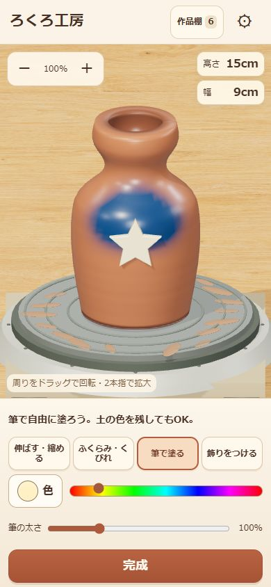

ろくろ工房Pottery Atelier
形も色も飾りも、思いのままに。
Shape, color, and decorate your own pot.

スマホでは指の少し上が作業位置です。壺の周りをドラッグで回転、2本指で拡大。
On touchscreens, work just above your finger. Drag around the pot to turn; pinch to zoom.
ゲーム画面だけ開く →Open game only →遊び方How to play
- 道具を選び、壺をドラッグして好きな形に。「ふくらみ・くびれ」は器の右半分で操作します。
- Choose a tool and drag the clay into your own shape. Use the right half for side shaping.
- 画面上の色とサイズのゲージで、筆の太さや飾りの大きさを調整。筆で自由に塗れます。12種類の飾りも楽しめます。
- Use the color and size sliders to adjust your brush or ornaments. Paint by hand and add any of 12 ornament shapes.
- 周りをドラッグで回転。2本指や＋・−で拡大縮小。完成したら名前をつけて撮影し、作品棚へ。
- Drag around the pot to turn. Pinch or use + and − to zoom. Finish, name, and photograph your creation for your local shelf.